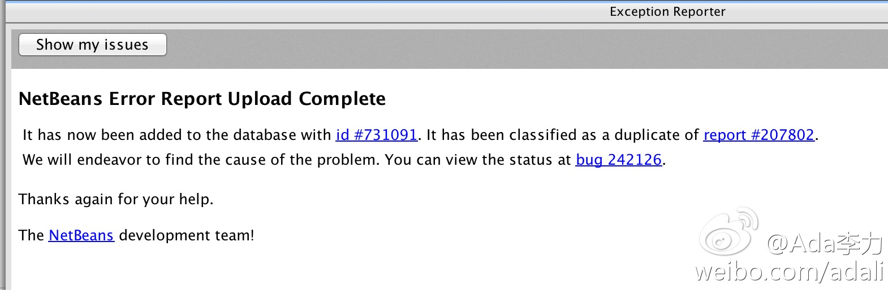

NetBeans的bug report做得不错。运行非常慢时，NetBeans自动提醒SpeedSlow信息，问需不需要发送个Bug Report, 输入些信息后，点确定，就得到一个bug记录单。 
#创业随想#一方面，尽量把可固定流程的事物用计算机来完成，减少人工干预。另一方面，涉及到与客户交互的部分，要增加高质量人工。 － 这两方面并不矛盾。目前常看到的情况是，与客户直接交互的员工占比不高，而且服务质量也不高。
我准备晚餐时，#姣姣#让明俊带她出去骑自行车。我表示不满，明俊说要不然我带闺女出去骑车，他来准备晚饭。我想了想，觉得虽然出去骑车听起来更健康更拉风，但我还是更愿意在家做饭。－ 我以后不再吐槽做饭什么的了，因为是自己的选择。
通过@CSDN_CODE 申请到两个月试用的腾讯云服务器，配置：1核，2G内存，50GB云硬盘，带宽：1Mbps。如果部署的开源应用不错的话，后续有可能申请到一年期免费，多谢@我爱笨兔兔ibentutu 的帮助。